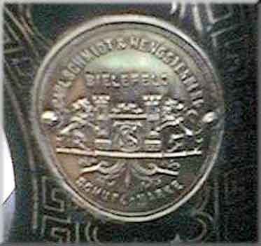

Catalogue of German Makers' Logos
Carl Schmidt & Hengstenberg
Bielefeld, Westphalia

©
Alan Quinn 2001 All Rights Reserved
This page may not be reproduced or distributed in part or in whole without the prior written permission of the relevant copyright owner